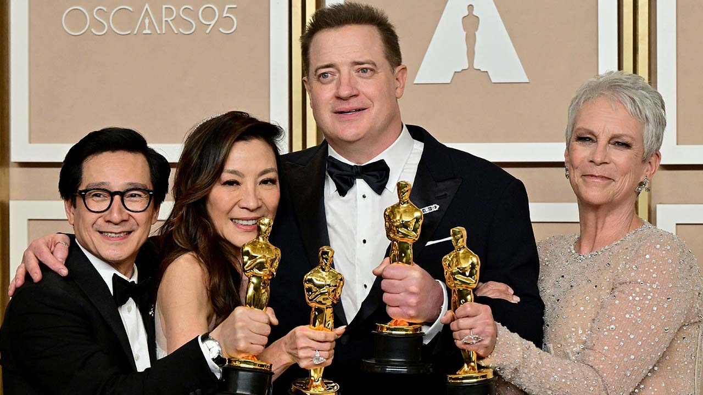
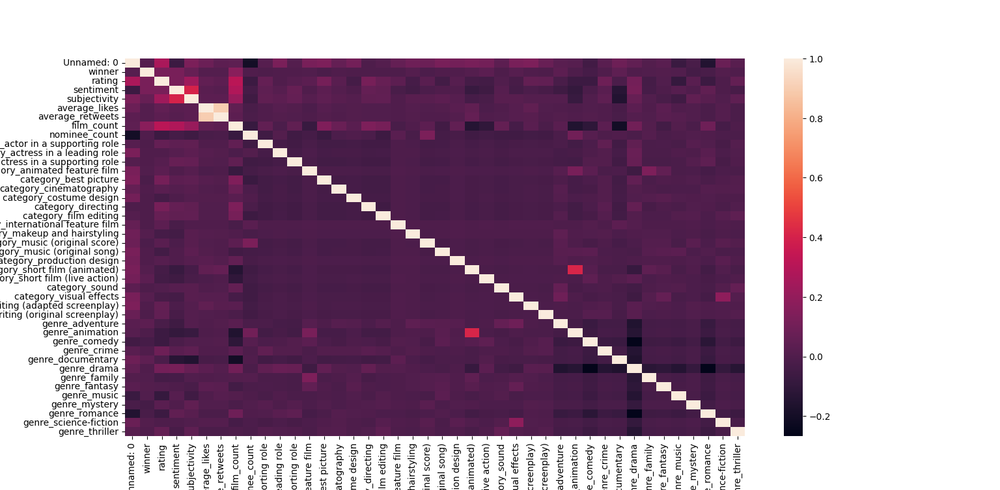

Every year I try my best to complete the Oscars Death Race. I enjoy watching all the movies and I appreciate the chance to learn about and watch some films I would not have watched otherwise. Like this year, one of my favorite films was Mrs. Harris Goes to Paris, not the type of movie I would normally watch. But this post isn't about movies, it's about machine learning.
AI and machine learning are all the rage right now. This isn't another generative text algorithm post though. In an effort to teach myself more about machine learning and refine my skills, I decided to make this year's Oscar watching experience a challenge. Can I train an algorithm to predict the Academy Award winners better than I can.
And the results are, I can! I will admit none of the models I trained performed that well, but they did beat me this year. (Although the Oscar results this year were somewhat surprising, that's a discussion for another time).
The following table summarizes the predictions, training, and final accuracy of me and the five models.
| Category | My Predictions | Naive Bayes | KNN | Logistic Regression | Random Forest | SVM | Actual Results |
|---|---|---|---|---|---|---|---|
| actor in a leading role | Austin Butler - Elvis | The Banshees of Inisherin | Elvis | The Banshees of Inisherin | The Banshees of Inisherin | Elvis | The Whale |
| actor in a supporting role | Brendan Gleeson - The Banshees of Inisherin | Everything Everywhere All at Once | Everything Everywhere All at Once | The Banshees of Inisherin | Everything Everywhere All at Once | Causeway | Everything Everywhere All at Once |
| actress in a leading role | Cate Blanchett - Tar | Everything Everywhere All at Once | Everything Everywhere All at Once | To Leslie | Everything Everywhere All at Once | Tar | Everything Everywhere All at Once |
| actress in a supporting role | Kerry Condon - The Banshees of Inisherin | Everything Everywhere All at Once | Everything Everywhere All at Once | The Banshees of Inisherin | Everything Everywhere All at Once | Black Panther: Wakanda Forever | Everything Everywhere All at Once |
| animated feature film | Guillermo del Toro's Pinocchio | Guillermo del Toro's Pinocchio | Guillermo del Toro's Pinocchio | Puss in Boots: The Last Wish | Puss in Boots: The Last Wish | Guillermo del Toro's Pinocchio | Guillermo del Toro's Pinocchio |
| cinematography | All Quiet on the Western Front | All Quiet on the Western Front | All Quiet on the Western Front | Tar | All Quiet on the Western Front | Bardo, False Chronicle of a Handful of Truths | All Quiet on the Western Front |
| costume design | Everything Everywhere All at Once | Everything Everywhere All at Once | Everything Everywhere All at Once | Everything Everywhere All at Once | Everything Everywhere All at Once | Black Panther: Wakanda Forever | Black Panther: Wakanda Forever |
| directing | Everything Everywhere All at Once | Everything Everywhere All at Once | Everything Everywhere All at Once | Triangle of Sadness | Everything Everywhere All at Once | The Banshees of Inisherin | Everything Everywhere All at Once |
| documentary feature film | Navalny | Fire of Love | All That Breathes | Fire of Love | All the Beauty and the Bloodshed | All That Breathes | Navalny |
| documentary short film | The Elephant Whisperers | The Elephant Whisperers | The Elephant Whisperers | The Elephant Whisperers | Haulout | The Elephant Whisperers | The Elephant Whisperers |
| film editing | Top Gun: Maverick | Everything Everywhere All at Once | Everything Everywhere All at Once | Top Gun: Maverick | Everything Everywhere All at Once | Elvis | Everything Everywhere All at Once |
| international feature film | All Quiet on the Western Front | All Quiet on the Western Front | All Quiet on the Western Front | The Quiet Girl | All Quiet on the Western Front | Argentina, 1985 | All Quiet on the Western Front |
| makeup and hairstyling | Elvis | Black Panther: Wakanda Forever | All Quiet on the Western Front | The Batman | All Quiet on the Western Front | Black Panther: Wakanda Forever | The Whale |
| music (original score) | Babylon | Everything Everywhere All at Once | All Quiet on the Western Front | Everything Everywhere All at Once | Everything Everywhere All at Once | Babylon | All Quiet on the Western Front |
| music (original song) | RRR | Everything Everywhere All at Once | Everything Everywhere All at Once | RRR | Everything Everywhere All at Once | Black Panther: Wakanda Forever | RRR |
| best picture | Everything Everywhere All at Once | Everything Everywhere All at Once | All Quiet on the Western Front | Top Gun: Maverick | The Banshees of Inisherin | Avatar: The Way of Water | Everything Everywhere All at Once |
| production design | Babylon | Avatar: The Way of Water | All Quiet on the Western Front | Babylon | All Quiet on the Western Front | Avatar: The Way of Water | All Quiet on the Western Front |
| short film (animated) | Ice Merchants | My Year of Dicks | The Boy, the Mole, the Fox and the Horse | Ice Merchants | Ice Merchants | The Boy, the Mole, the Fox and the Horse | The Boy, the Mole, the Fox and the Horse |
| short film (live action) | Le Pupille | Le Pupille | An Irish Goodbye | The Red Suitcase | Le Pupille | An Irish Goodbye | An Irish Goodbye |
| sound | All Quiet on the Western Front | Avatar: The Way of Water | All Quiet on the Western Front | Top Gun: Maverick | All Quiet on the Western Front | Avatar: The Way of Water | Top Gun: Maverick |
| visual effects | Avatar: The Way of Water | Black Panther: Wakanda Forever | All Quiet on the Western Front | Top Gun: Maverick | All Quiet on the Western Front | Avatar: The Way of Water | Avatar: The Way of Water |
| writing (adapted screenplay) | Women Talking | All Quiet on the Western Front | All Quiet on the Western Front | Top Gun: Maverick | All Quiet on the Western Front | All Quiet on the Western Front | Women Talking |
| writing (original screenplay) | Everything Everywhere All at Once | Everything Everywhere All at Once | Everything Everywhere All at Once | Triangle of Sadness | Everything Everywhere All at Once | Everything Everywhere All at Once | Everything Everywhere All at Once |
| Training Accuracy | 60.86%* | 66.15% | 79.68% | 79.68% | 80.27% | 79.68% | - |
| True Accuracy | 11/23 (47%) | 11/23 (47%) | 14/23 (61%) | 4/23 (17%) | 8/23 (35%) | 6/23 (26%) | - |
*My training accuracy is based on the average of my predictions the past 3 years.
K-nearest neighbors (KNN) performed the best and Logistic Regression performed the worst. Interesting to see how well or poorly they both generalized considering their training accuracy (basic cross-validation).
I originally expected Random Forest to be the most successful as it is an ensemble method and it's often considered one of the best (non-deep learning) models for classifications. It also has more hyperparameters for me to play with and tune, so I was optimistic it would be a stronger model.
KNN did the best though. In the code I did hyperparameter tuning on each of my models. Although I only tuned two for KNN, in the final model it was determined that Manhattan Distance and 20 neighbors were the best parameters to use. So that is what our winning algorithm did.
Although KNN won, the other models (mostly) did well too! The expected value of predictions is 4.5 out of 23 if you guess completely randomly (1/5 * 22 + 1/10). All categories have 5 nominees except best picture which has 10. Therefore, all of these models did better than true random except Logistic Regression.
That said, I should mention, the winners were chosen based on the highest probability of winning according to the models. All the models, except Naive Bayes, predicted it was more likely every movie lost every category. But obviously we can't have that so I used the highest probabilities for winning (lowest odds of losing) as each winner.
I personally only got 11 right, so I lost to the machine this year. But this was a fun learning experience and I hope to try it again next year! Although, if I improve the code I'll probably just lose even harder...
This was a pretty bare bones machine learning experiment. It's been a while since I have worked with machine learning so this was a reintroduction for me, and thus I kept it simple.
If you want to check out the code, you can take a look at the Git repo and mess around with it yourself here.
This project went through the full data mining process. After searching for a while, I found a Kaggle dataset that had all of the Academy Award data since the first Academy Awards in 1929. I downloaded that and we were off to a good start.
We needed to do some data cleaning before we could use it. I converted all special characters in the titles to their unaccented versions. This was needed to webscrape Letterboxd (more about that below). Any row without a film (like special awards) we didn't need, so we removed those rows.
The second step in the process was to do the web scraping and feature building. Nominees and categories from the Kaggle set were a good start but not much to work with. To build out the dataset, I used two additional sources of data, Letterboxd and Twitter.
Letterboxd is the top film-watching social media (in my opinion). I figured the ratings on Letterboxd may be useful data for determining if a film is an award winner. Using the Letterboxdpy package I scraped data for each film in the dataset. I collected the average user rating and also the genre from here.
From Twitter, I used the snscrape package to search for the film title + "oscars" and film title + "academy awards." With that data we collected the average likes and retweets on some of the search results to determine a metric for engagement. I also used the textblob package to perform a quick sentiment analysis on the data. This gave us additional features of sentiment and subjectivity of the tweets.
For both Twitter and Letterboxd, if any movies were included more than once, I reused the data instead of scraping again. This was a small optimization for improving the time it took to build the data. Scraping the web data is pretty slow, so the process to build the data set (not even training models yet) took about 6 hours to run.
With the data collected, I was almost ready to jump into the fun machine learning stuff.
First we needed to preprocess all this data. There were a few steps to this.
For the training data, we dropped any rows with NaN (not a number) or null values. This mostly included special awards (a category we weren't predicting) and some older films. The dataset was around 10,000 records long, so dropping a few still left us with a good set of data to train on.
For this year's data, I couldn't drop any rows since we need to predict on all this year's results! The only NaN values in this case were when letterboxd scaping failed. To account for that, I imputed the missing ratings as averages of the other ratings. Not perfect, but it at least got us working data. This could be improved next time.
For the "genre" and "nomination category" features, I needed to convert these from nominal variables to categorical variables. In order to make this something useful we could train and predict on, I used one-hot encoding to make each category into its own column/variable.
After creating the one-hot encodings I had to align the test data and this year's unknown data to ensure that there were no missing columns when we went to predict later.
Now that we had all the data ready we could start machine learning!
First I plotted a correlation heatmap to show the relationships between all the features. Unfortunately, due to all the one hot columns it got pretty big...
Both text analytics values, sentiment and subjectivity seemed correlated. The film count (number of times a film was nominated) correlated a bit with its Letterboxd rating, sentiment, and subjectivity as well.
Not too surprising, Animated Short and the Animation Genre also had some strong correlations.
With the data ready, we jumped into training. I used scikit-learn to train the models. Since I was only using basic classification algorithms, they trained quickly. This let me implement several different models. I chose 5 different types of classification algorithms to train, a fun bonus experiment to see which model worked best:
During the training sci-kit made it super easy. We used 20% of the data for cross validation to get our training accuracy. I also used the builtin Randomized Search CV and Grid Search CV for hyperparameter tuning on the models that supported it.
Once all of this was there I predicted the outcomes using each model and saved it to a CSV. The results are seen in the table above.
I used a lot of great packages to make this work. Apart from machine learning, my biggest takeaway from this experience was how massive the network of Python packages is! People really have done everything, so it's a very easy ecosystem to jump into and just start working. The packages I used are:
I had a lot of fun with this project this year, but there is still a lot of room to grow. The Oscars aren't going away, so next year we will be back with, hopefully, an even stronger set of models!
This code was very basic and can be optimized in the future. A few ideas I have for improving these predictions next year are:
We used Twitter and Letterboxd data this year. Some other features that may be helpful to include in the model are:
I think these additional data points may reveal some additional patterns we can use to train the models.
Speaking of training models. This year I focused on basic, classical machine learning models. Next year, I think it could be good to do some deep learning and build a neural network from this dataset. The hope would be a multilayered neural net can uncover more patterns we didn't see and perform with even better accuracy.
This year, the models were trained on all data to predict for all categories. This worked pretty well. But, it may work better to train models specifically for each category instead of generalizing to all categories. This would be more time to train but may get better results.
This was a fun project, and I am sad I lost. Next year I hope to train an even better model and lose by even more! (I'm sure I'll get over it by then).
Thanks for reading! If you want to check out the code you can find it in this Git repo.
Enjoyed this article? Subscribe to the RSS Feed!